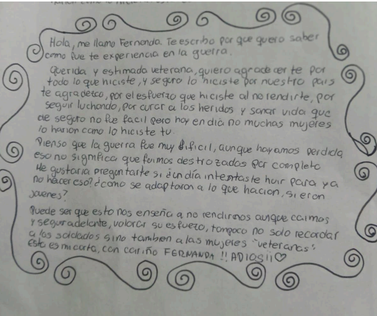

Mujeres en Malvinas: cartas para quienes estuvieron
Por el 2 de abril escribimos a las mujeres que formaron parte de la Guerra de Malvinas —enfermeras, instrumentadoras, comunicadoras y colaboradoras— para hacerles llegar las cartas que preparamos.
Por Carla Lopardo · Sede: Todas las sedes · · Territorio

La carta de Agustina Fernandez · Peñas Blancas
Para continuar practicando la memoria identitaria y seguir construyendo sentidos propios sobre la Guerra de Malvinas, concientizamos sobre la invisibilización de las mujeres que formaron parte de la guerra.
La propuesta era escribirle a una mujer que participó en la Guerra de Malvinas (como enfermera, instrumentadora, comunicadora o colaboradora) con el fin de hacerle llegar las cartas que están prontas a ser recibidas por dos de ellas en el mes de octubre.